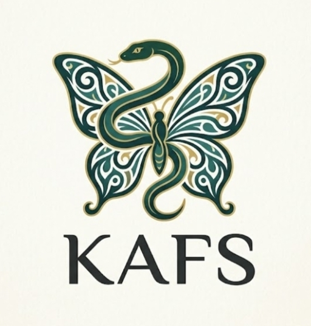

Welcome to SEKAWAN4

Filosofi Logo
Logo KAFS menampilkan perpaduan antara kupu-kupu dan ular yang memiliki makna simbolis mengenai perubahan, ketangguhan, dan keseimbangan. Kupu-kupu melambangkan transformasi, pertumbuhan, dan kebebasan. Proses perubahan dari kepompong menjadi kupu-kupu menggambarkan perjalanan menuju pribadi yang lebih baik dan berkembang. Ular melambangkan kekuatan, ketangguhan, kecerdasan, dan kemampuan beradaptasi. Bentuknya yang melingkar juga menggambarkan kesinambungan serta perjalanan yang tidak selalu berjalan lurus. Perpaduan kupu-kupu dan ular menggambarkan keseimbangan antara kelembutan dan kekuatan. Hal tersebut menunjukkan bahwa seseorang dapat memiliki sifat yang lembut, tetapi tetap kuat dalam menghadapi berbagai tantangan. Warna hijau tua melambangkan pertumbuhan, ketenangan, kestabilan, dan harapan, sedangkan warna keemasan melambangkan keberhasilan, nilai, dan pencapaian. Motif pada sayap memberikan kesan keindahan, kreativitas, dan identitas yang khas. Pola tersebut juga menunjukkan bahwa setiap proses pertumbuhan memiliki keunikan tersendiri. Tulisan “KAFS” merupakan inisial dari setiap nama anggota kami.